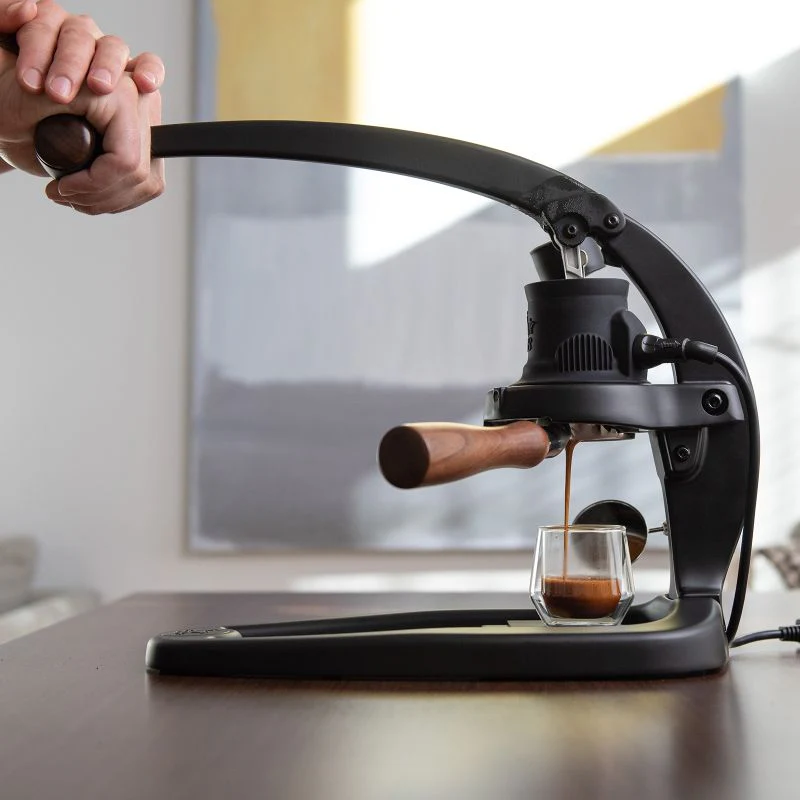
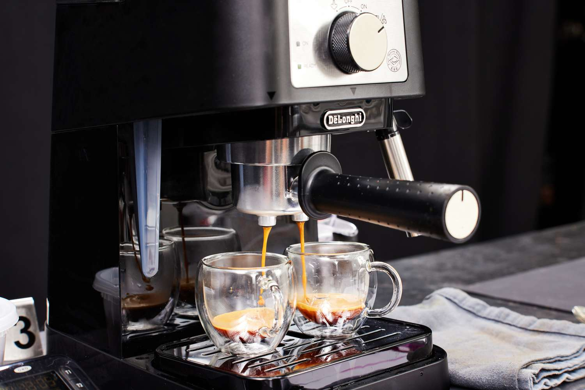
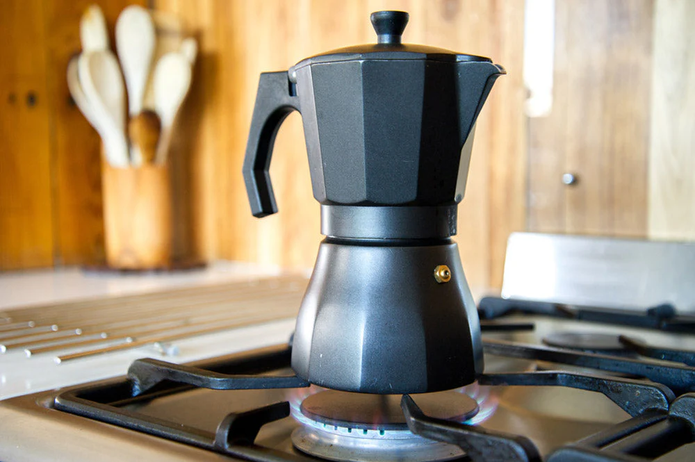
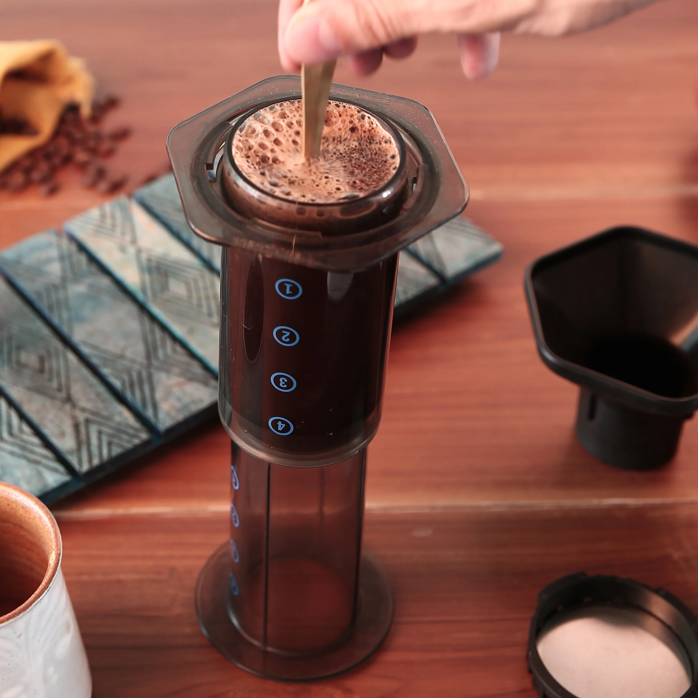
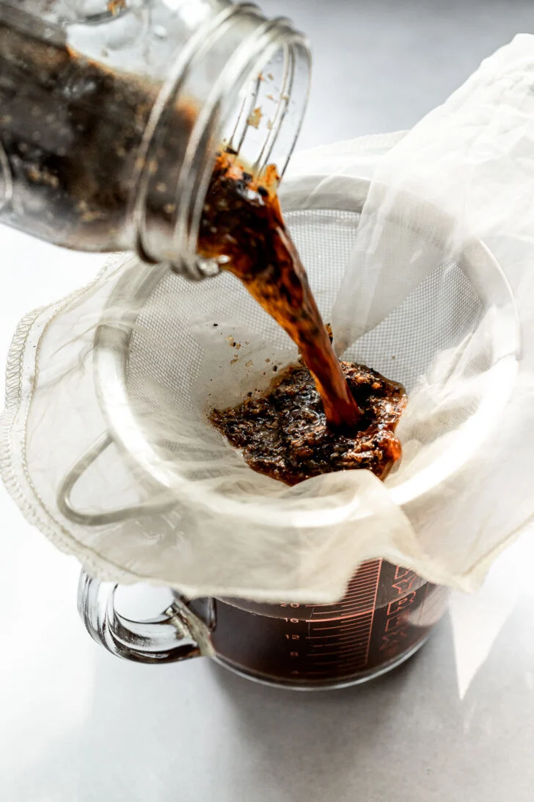

HOME BREWING TIPS
Simple Brewing Methods
These are beginner-friendly brewing methods that can be practiced at home.

Manual Espresso for Home
Manual espresso allows users to control pressure, extraction time, and brewing techniques more carefully. A fine grind size, consistent tamping, and stable water temperature are important for balanced espresso flavour. Fresh beans and proper extraction can improve sweetness, crema, and aroma.

Espresso Machine
Espresso machines use pressure to extract concentrated coffee with rich crema and strong flavour. Home espresso machines can help users practice milk steaming, shot timing, and café-style coffee preparation. Regular cleaning and grinder adjustment are important for consistent coffee quality.

Pour-Over & V60
Pour-over brewing creates a clean and bright coffee profile that highlights flavour notes and aroma clearly. Brewing variables such as pouring speed, water temperature, and grind size can affect extraction balance. Light roast beans are commonly used for pour-over methods.

Moka Pot & Stovetop
The moka pot is a traditional Italian brewing method that produces strong and bold coffee similar to espresso. Medium-fine grind size and controlled heat help reduce bitterness and improve flavour balance. It is popular for making milk-based coffee drinks at home.

AeroPress
AeroPress is a simple and portable brewing device that produces smooth and balanced coffee quickly. Users can experiment with brewing time, grind size, and water ratio to create different flavour profiles. It is suitable for travel and beginner home brewers.
French Press
French press brewing creates a rich and full-bodied coffee texture because coffee oils remain in the cup. Coarse grind size and longer steeping time are commonly used for better extraction. This method is simple and suitable for everyday coffee preparation.

Syphon
Syphon brewing combines science and manual brewing techniques to create clean and aromatic coffee. Vacuum pressure and cloth filtration help produce delicate flavour clarity. This brewing style is often used in specialty cafés for presentation and precision.

Cold Brew
Cold brew coffee is made using cold water and long extraction time, usually between 12 to 24 hours. This method creates a smooth, sweet, and low-acidity flavour profile. Cold brew is refreshing and works well with milk, tonic, or flavoured syrups during warmer seasons.